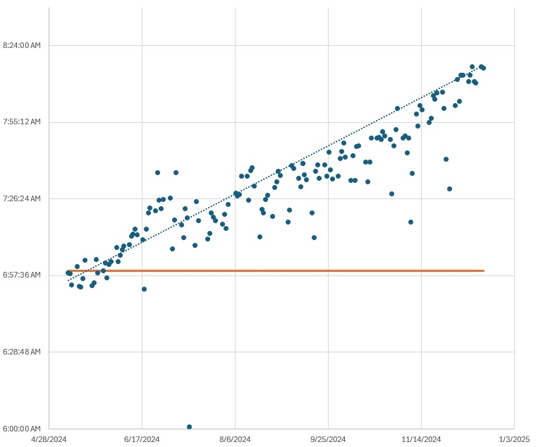

Sleep
Jan 14, 2026
Stereotypes are generally pretty bad. Like universally I would say it's not very good to promote stereotypes because they are usually racist or sexist or otherwise pretty evil. That being said, today I have been thinking about a new stereotype that I am surprised doesn't already exist. My stereotype is that of the late riser. The opposite of the early bird. I genuinely think that there needs to be a lot more societal pressure to encourage healthy sleep habits. I say this as someone who has for my entire life struggled with sleep. For literally as long as I can remember I have never been a morning person. This is a cutesy label I suppose that normalizes and excuses a bad habit. Then as soon as I had the agency to set my own bedtime things got really bad and for the most part have never gotten better. I don't think I have maintained a consistent, eight hours of sleep per night sleep schedule since maybe grade 9? Even while working a full time job. At one of my jobs I was actually able to graph my clock in times (see below). Ideally it would be a flat line but no, not for me. For me I have a consistent almost perfectly linear line. Despite this utter failure to show up to work reliably, nobody ever made any serious comment on it. So that being said I think this qualifies me to speak on the topic of bad sleep schedules.
There are a lot of behaviours that society has deemed unacceptable. If you have bad hygiene for example, people might not say anything to your face but you will be ridiculed for it. Despite a lot of recent efforts the same is true for problems with addiction, homelessness, teen pregnancy, etc. There is stigma, shame, and just general negativity associated with these things, and I will not go into whether or not it is valid. I think the reason society rejects these things is that they place a lot of strain on other people. Families, relationships, employers, are all affected by the "failures" of an individual. This is where poor sleep habits differ. Typically poor sleep habits exclusively impact the individual. It kind of puts into perspective that the reason people are so opposed to the other behaviours mentioned is not out of care for another person, but instead out of selfishness. Maybe this is obvious. A weird quirk of poor sleep habits is that, despite their destructive impacts, they get glorified in a lot of situations. Think of the start up founder, the office worker that goes above and beyond. On the other side of the spectrum, the partier, or rave goer. In these contexts being up late, getting few hours of sleep is a badge of honour. In my own experience I have never tried to hide my poor sleep schedule. Being a university student, I think this is probably the most accepted environment for this kind of thing. Most people are either in the same position or are willing to laugh without much serious thought when I joke about my situation.
I want to feel shame. Society has made a very strong effort to ensure that no one feels ashamed over poor habits or traits and yeah in most of those situations I agree. But not this. It feels backwards and almost like an obsolete way of thinking but I really do think people like me deserve to be ostricized for this. If I was met with pure, vitriolic digust, maybe I would change. Is external motivation what's missing? Lets be clear I have a lot of personal motivation to clean up my act. It's not a very pleasent feeling to wake up and the sun has already set. I cannot count the amount of classes I have slept through. When I have any kind of appointment or exam or lab I need to pray that I can flip my sleep schedule around on a whim. It's not just about waking up late either, you can wake up early and still have horrible sleep habits. Going to work on 4 hours of sleep is a miserable feeling. All of this is horrible and should be reason enough to fix things but clearly for me it isn't. I want to face social consequences. I want 1920s political satire cartoon caricitures of the late riser. It needs to be disgusting, a complete slob. I don't want fairness or accuracy, I want motivation.
There definitely are extenuating circumstances with this topic and I understand this. Those are not what I'm referring to. If you work a night shift this is completely acceptable. If you have actual medical conditions affecting your sleep of course I am not advocating for your ridicule. This is meant to target the individual who stays up late with no purpose beyond scrolling, or watching youtube, or playing videogames, or whatever other thing it may be. This kind of person should be tarred and feathered in the street.
